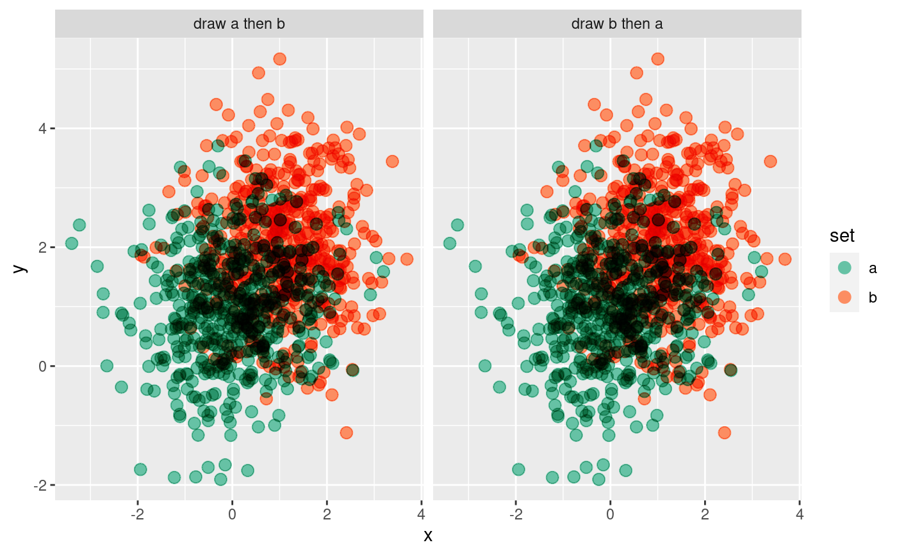

Blend objects within a single layer (geom) or across multiple layers (geoms)
using graphical blending modes, such as "multiply", "overlay", etc. Uses
the built-in compositing support in graphical devices added in R 4.2.
blend(x, blend = "over", alpha = 1, ...)A ggplot2::Layer, such as a geom or stat, or a list
of layers.
The blend mode to use. The default mode, "over", corresponds to
the "usual" blend mode of drawing objects on top of each other.
The list of supported blend modes depends on your graphical device
(see Murrell 2021), and are listed in dev.capabilities()$compositing.
Blend modes can include: "clear",
"source", "over", "in", "out", "atop", "dest", "dest.over",
"dest.in", "dest.out", "dest.atop", "xor", "add", "saturate",
"multiply", "screen", "overlay", "darken", "lighten",
"color.dodge", "color.burn", "hard.light", "soft.light",
"difference", and "exclusion"
Blend modes like "multiply", "darken", and "lighten" are particularly useful as they
are commutative: the result is the same whichever order they are applied in.
A warning is issued if the current graphics device does not appear to support
the requested blend mode. In some cases this warning may be spurious, so
it can be disabled by setting options(ggblend.check_blend = FALSE).
A numeric between 0 and 1 (inclusive). The opacity of a
transparency mask applied to objects prior to blending.
Additional arguments (currently unused).
An object that can be added to a ggplot() object: if the input is a ggplot2::Layer,
the result is a ggplot2::Layer; if the input is a list of ggplot2::Layers,
the output is a list of ggplot2::Layers.
If x is a single layer / geometry and the blend_group aesthetic is not set, every
graphical object (grob()) output by the geometry will be blended together
using the blend blend mode. If alpha != 1, a transparency mask with the
provided alpha level will be applied to each grob before blending.
If x is a single layer / geometry and the blend_group aesthetic is set,
the geometry will be rendered for each subset of the data defined by the
blend_group aesthetic, a transparency mask with the provided alpha level
will be applied to each resulting group as a whole (if alpha != 1), then these groups
will be blended together using the blend blend mode.
If x is a list of layers / geometries, those layers will be rendered
separately, a transparency mask with the provided alpha level
will be applied to each layer as a whole (if alpha != 1), then these layers
will be blended together using the blend blend mode.
Murrell, Paul (2021): Groups, Compositing Operators, and Affine Transformations in R Graphics. The University of Auckland. Report. doi:10.17608/k6.auckland.17009120.v1 .
library(ggplot2)
# create two versions of a dataset, where draw order can affect output
set.seed(1234)
df_a = data.frame(x = rnorm(500, 0), y = rnorm(500, 1), set = "a")
df_b = data.frame(x = rnorm(500, 1), y = rnorm(500, 2), set = "b")
df_ab = rbind(df_a, df_b) |>
transform(order = "draw a then b")
df_ba = rbind(df_b, df_a) |>
transform(order = "draw b then a")
df = rbind(df_ab, df_ba)
# Using the "darken" blend mode, draw order does not matter:
df |>
ggplot(aes(x, y, color = set)) +
geom_point(size = 3) |> blend("darken") +
scale_color_brewer(palette = "Set2") +
facet_grid(~ order)
#> Warning: blend = "darken" does not appear to be supported by your graphics device.
#> - Blending output may not be as expected.
#> - If your current graphics device *does* support blend = "darken"
#> but auto-detection failed, consider reporting a bug.
#> Warning: Group definition failed
#> Warning: Group definition failed
# Using the "multiply" blend mode, we can see density within groups:
df |>
ggplot(aes(x, y, color = set)) +
geom_point(size = 3) |> blend("multiply") +
scale_color_brewer(palette = "Set2") +
facet_grid(~ order)
#> Warning: blend = "multiply" does not appear to be supported by your graphics device.
#> - Blending output may not be as expected.
#> - If your current graphics device *does* support blend = "multiply"
#> but auto-detection failed, consider reporting a bug.
#> Warning: Group definition failed
#> Warning: Group definition failed

# blend() on a single geom by default blends all grobs in that geom together
# using the requested blend mode. If we wish to blend within specific data
# subsets using normal blending ("over") but between subsets using the
# requested blend mode, we can set the blend_group aesthetic. This will
# make "multiply" behave more like "darken":
df |>
ggplot(aes(x, y, color = set, blend_group = set)) +
geom_point(size = 3) |> blend("multiply") +
scale_color_brewer(palette = "Set2") +
facet_grid(~ order)
#> Warning: blend = "multiply" does not appear to be supported by your graphics device.
#> - Blending output may not be as expected.
#> - If your current graphics device *does* support blend = "multiply"
#> but auto-detection failed, consider reporting a bug.
#> Warning: Group definition failed
#> Warning: Group definition failed
# We can also blend lists of geoms together; these geoms are rendered using
# normal ("over") blending (unless a blend() call is applied to a specific
# sub-layer, as in the first layer below) and then blended together using
# the requested blend mode.
df |>
ggplot(aes(x, y, color = set)) +
list(
geom_point(size = 3) |> blend("darken"),
geom_vline(xintercept = 0, color = "gray75", size = 1.5),
geom_hline(yintercept = 0, color = "gray75", size = 1.5)
) |> blend("hard.light") +
scale_color_brewer(palette = "Set2") +
facet_grid(~ order)
#> Warning: blend = "hard.light" does not appear to be supported by your graphics device.
#> - Blending output may not be as expected.
#> - If your current graphics device *does* support blend = "hard.light"
#> but auto-detection failed, consider reporting a bug.
#> Warning: blend = "darken" does not appear to be supported by your graphics device.
#> - Blending output may not be as expected.
#> - If your current graphics device *does* support blend = "darken"
#> but auto-detection failed, consider reporting a bug.
#> Warning: Group definition failed
#> Warning: Group definition failed
#> Warning: Group definition failed
#> Warning: Group definition failed